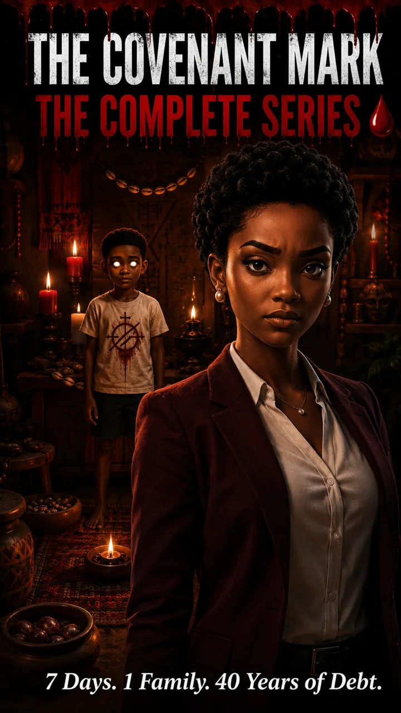
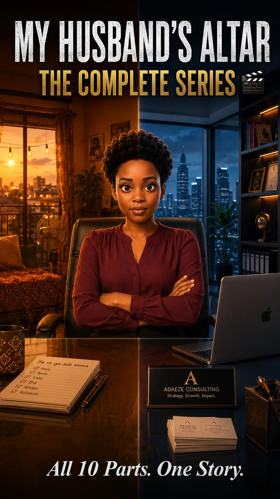
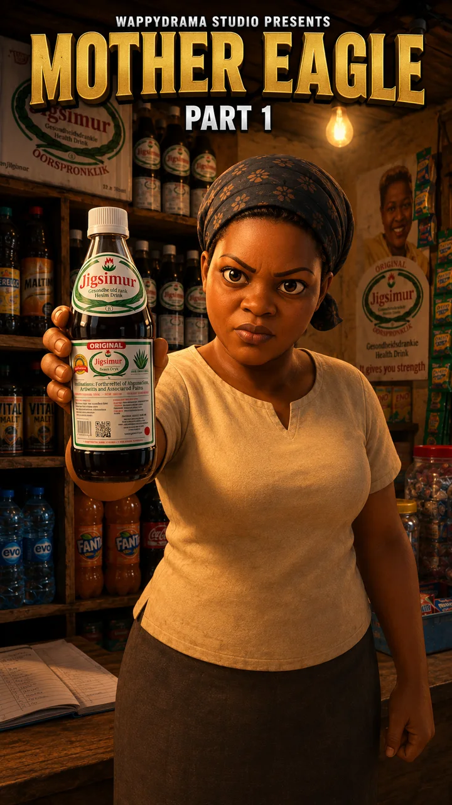
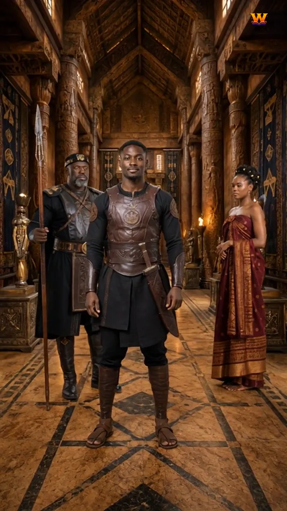
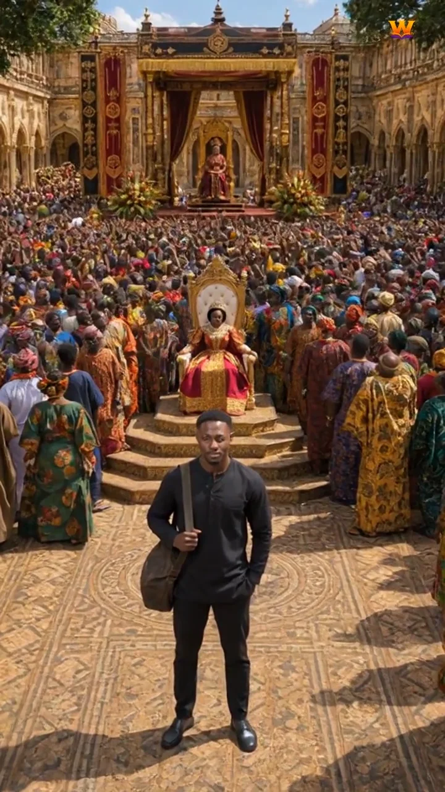
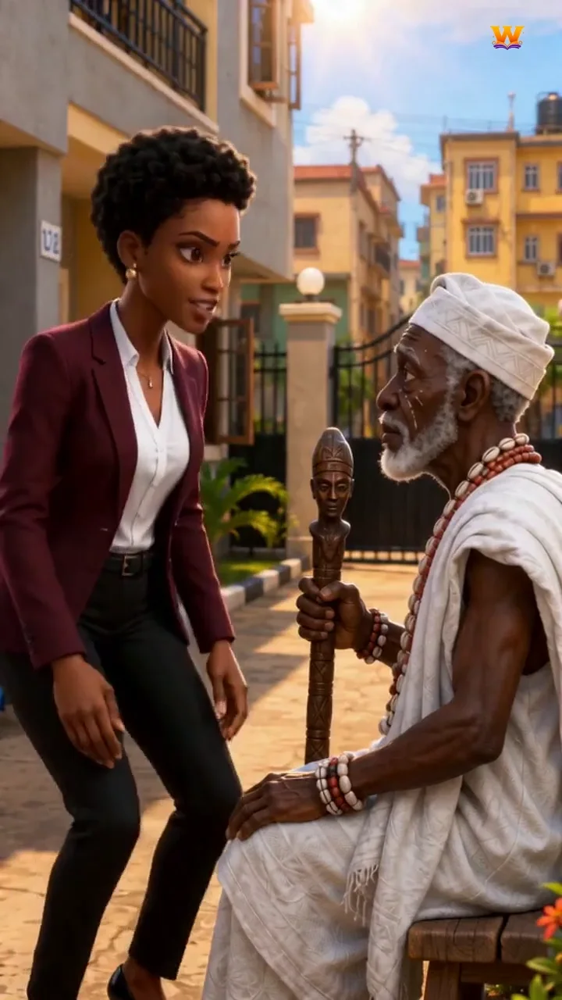
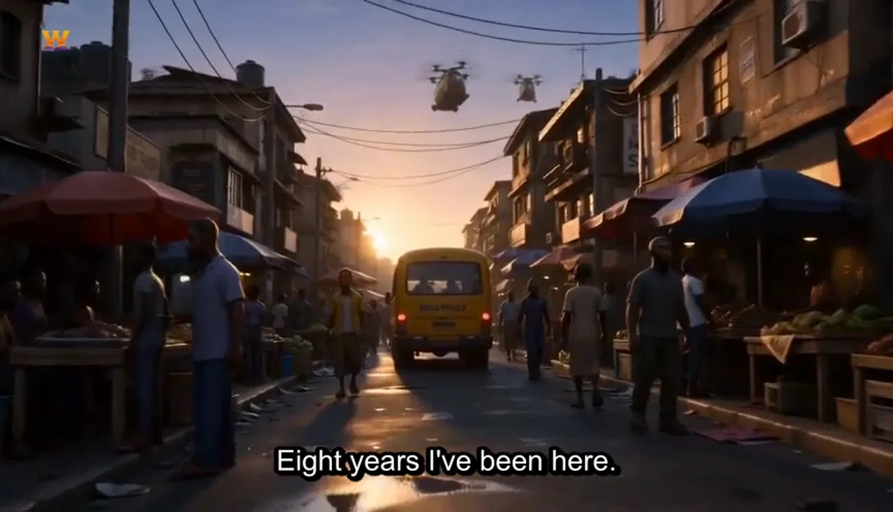
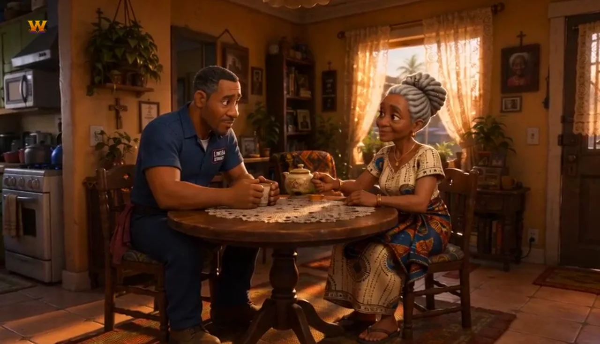
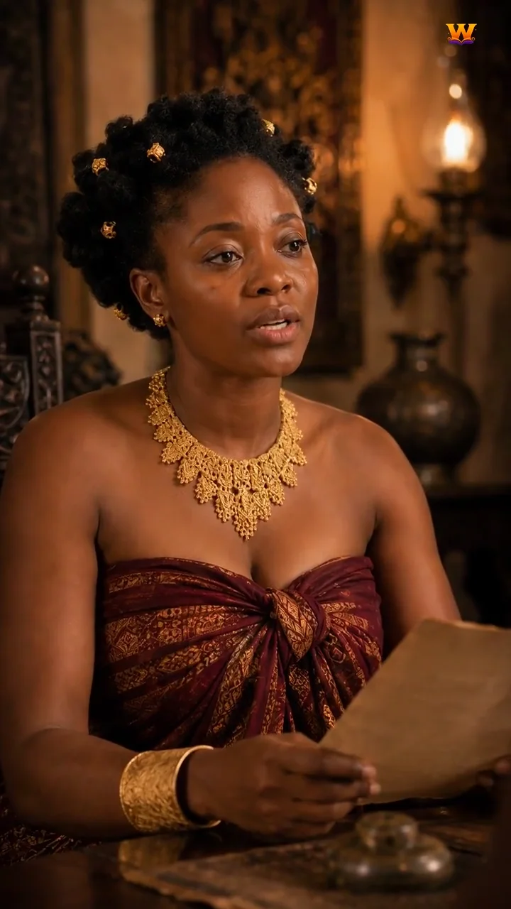

WappyTales
An AI film studio that turns written scripts into Nollywood-style drama series. 59 episodes so far.

WappyTales is my AI film studio. A written story goes in; it is broken into shots, each shot is generated with AI video models, and everything is stitched into finished, numbered episodes with titles, voices, music and thumbnails.
It has produced four complete series: The Covenant Mark and My Husband's Altar (10 parts each), Crown's Burden (14 parts) and Mother Eagle (25 parts), in both 3D-animated and realistic styles. It also makes dialogue-driven shows like Lagos 2047, a sci-fi series set in a future Lagos, with four finished episodes.
- Shots generated with Seedance 2.0 (through BytePlus), Google Veo, Kling and Grok Imagine, chosen per scene.
- Characters stay the same from shot to shot: reference images are composited with Sharp and background removal before each generation.
- Voices with ElevenLabs, lip-sync with LatentSync, and generated film scores and sound effects.
- An open-source model (Wan 2.1 on ComfyUI) running on free Kaggle GPU notebooks, reached through a Cloudflare tunnel, for experiments.
- Clips stitched into episodes with ffmpeg, with subtitles, upscaling, a full-series cut and poster thumbnails. Failed jobs can be recovered and resumed.
- Published on TikTok, YouTube, Instagram, Facebook and X.









Woverico
Automated short-form news and story videos, voiced and exported daily for TikTok and Reels.